Travaux exploratoires avec des données satellites : Bilan des résultats obtenus
Raya Berova (DMRG), Gaëtan Carrère (SES - DR971), Thomas Faria (SSP Lab), Clément Guillo (SES - DR971), Tom Seimandi (SSP Lab)
28 mai 2024
Plan de la présentation
1️⃣ Introduction
2️⃣ Méthodologie
3️⃣ Les données
4️⃣ Résultats obtenus
5️⃣ Structure du projet
6️⃣ Discussion
1️⃣ Introduction
Origine du projet
- Dans le cadre du stage de Quentin Chabennet en 2022, participation au Challenge Data “Land cover predictive modeling from satellite images”
- SSM Agriculture: travail avec le Centre d’études spatiales de la biosphère (Cesbio). Comparaison de la carte d’occupation du sol issue de l’enquête Teruti avec une carte construite avec des données de télédétection
- En Guyane, fonds de carte issus de données Pléiades utilisés pour la collecte
- Discussion sur la possibilité d’utiliser de l’imagerie satellite pour faciliter l’organisation de l’enquête cartographique en Guyane et à Mayotte
Une source de données à fort potentiel
- En théorie, observation de tout le territoire quasiment en temps réel
- Sentinel-2 : données haute résolution en accès libre à haute fréquence temporelle. Un même territoire est couvert environ tous les 5 jours
- Une grande communauté utilise ces données, ce qui donne lieu à la publication de contenu open-source (détection de nuages, etc.)
Une source de données à fort potentiel
- Pléiades : données très haute résolution. Archives disponibles gratuitement pour l’Insee, et possibilité de faire des commandes (tasking), gratuites sous un certain quota
Utilisation pour la statistique publique
- Mémorandum de Varsovie adopté par le Comité du Système statistique européen, pour encourager l’utilisation des données satellites pour l’élaboration de statistiques publiques
- Utilisation en complément des sources traditionnelles pour améliorer la connaissance de l’Insee sur le bâti :
- En particulier dans les DROM, facilitation de l’organisation des enquêtes cartographiques
- Cartographie du bâti à un instant précis
- Etudes ponctuelles (consommation d’espace)
Utilisation pour la statistique publique
- Possibilité d’aller jusqu’à contribuer à des estimations de population ?
- Nombreux acteurs intéressés : DMS (DMRG), DMTR, directions Antilles-Guyane et La Réunion-Mayotte
Début des travaux
- Détection automatique de changements (apparitions, disparitions) sur le bâti dans les DROM (Mayotte)
- Appui pour l’organisation des enquêtes cartographiques :
- On sélectionne les îlots concernés
- On récupère des données satellites couvrant ces îlots à la date de la précédente enquête cartographique et des données fraîches
- A l’aide de la méthode développée, on repère les ilots avec beaucoup de nouveaux bâtiments, etc.
Plan de la présentation
1️⃣ Introduction
2️⃣ Méthodologie
3️⃣ Les données
4️⃣ Résultats obtenus
5️⃣ Structure du projet
6️⃣ Discussion
2️⃣ Méthodologie
Segmentation sémantique
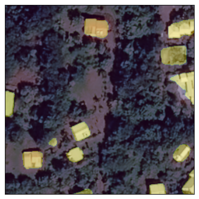Pleiades © CNES_2022, Distribution AIRBUS DS
Entrainement d’un modèle de segmentation
- On entraîne un modèle à segmenter automatiquement à partir d’exemples annotés. Pour cela il faut :
- Collecter des images satellites
- Produire les annotations de ces images (emplacement des bâtiments)
- On apprend au modèle à reproduire les annotations en partant des images. On espère qu’il pourra généraliser à d’autres images
De segmentation à détection de changements

Plan de la présentation
1️⃣ Introduction
2️⃣ Méthodologie
3️⃣ Les données
4️⃣ Résultats obtenus
5️⃣ Structure du projet
6️⃣ Discussion
3️⃣ Les données
Qu’est-ce qu’une image ?
Une image en couleurs concatène plusieurs tableaux de chiffres, un tableau pour chaque couleur Rouge (R), Vert (G), Bleu (B) :
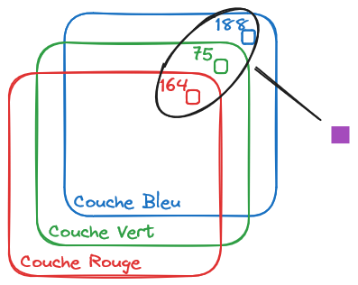Une image satellite
- Une image satellite peut avoir d’autres couches (ou bandes) que les RGB : infrarouge par exemple
- Les images satellites contiennent des informations géographiques → chaque pixel a des coordonnées dans l’espace
Caractéristiques d’une image satellite
Plusieurs caractéristiques existent pour une image satellite :
- La résolution spatiale
- La fréquence d’acquisition
- La résolution spectrale
- La couverture géographique
La fréquence d’acquisition et la couverture géographique nous intéressent tout particulièrement ici !
Images satellite à notre disposition
- Images très haute résolution : Pléiades (Airbus)
- Images haute résolution : Sentinel2
Images Pléiades
Fréquence d’acquisition :
- Archives gratuites
- Payant sur demande (1,80€/km²): 6 à 8 mois pour avoir un département
Résolution spectrale : 3 bandes (RGB)
Résolution spatiale : un pixel = \(0.5m \times 0.5m\)
Taille d’une image : \(2000 \times 2000\) pixels = 1km²
Images Sentinel2
Fréquence d’acquisition : tous les 5 jours et gratuit
Résolution spectrale : 13
Résolution spatiale : un pixel = \(10m \times 10m\)
Taille d’une image : \(250 \times 250\) = 6.25 km²
Pléiades vs Sentinel-2
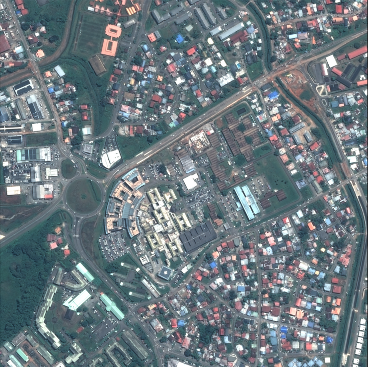
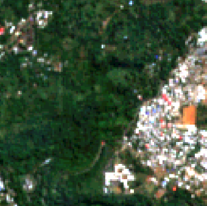
Sources disponibles de localisation de bâtiments
Deux sources d’annotations envisagées pour les bâtiments :
- Le RIL (INSEE)
- La BDTOPO (IGN)
Le RIL
- Annotation d’un bâtiment = un point qui donne l’emplacement du bâtiment (porte d’entrée ?)
- Le répertoire des immeubles localisés est une base de sondage actualisée dans les DOM par l’enquête cartographique
- Annotations en quantité limitée : l’enquête cartographique ne met à jour qu’un cinquième des logements du RIL dans les DOM
- Concept de logement
Exemple d’annotations RIL
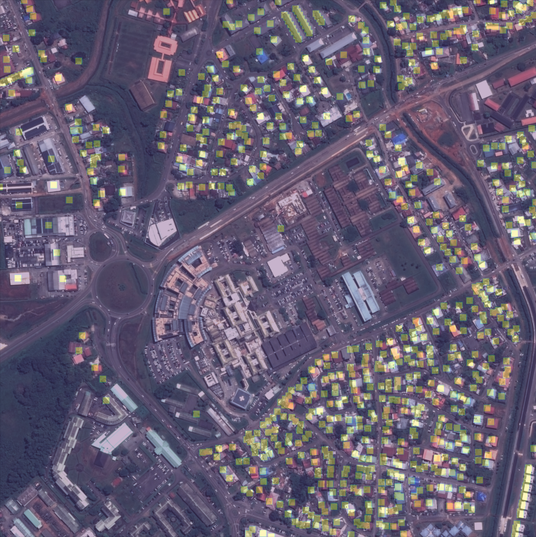Masque RIL, Pleiades © CNES_2022, Distribution AIRBUS DS
La BDTOPO
- Annotation d’un bâtiment = un polygone
- Elle est construite à partir de plusieurs sources, notamment à partir d’ortho-photos de l’IGN (prises de vue aériennes)
- Les éléments de la BDTOPO produite une année donnée ne sont pas datés précisément
- La BDTOPO n’est pas synchronisée avec les images Pléiades que l’INSEE acquiert
On la retient tout de même pour annoter les images Pléiades.
Exemple d’annotations BDTOPO
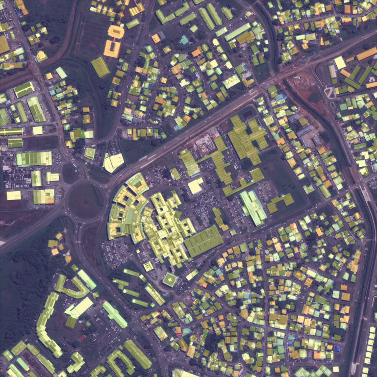Masque BDTOPO, Pleiades © CNES_2022, Distribution AIRBUS DS
Plan de la présentation
1️⃣ Introduction
2️⃣ Méthodologie
3️⃣ Les données
4️⃣ Résultats obtenus
5️⃣ Structure du projet
6️⃣ Discussion
4️⃣ Résultats obtenus
Résultats de Mayotte
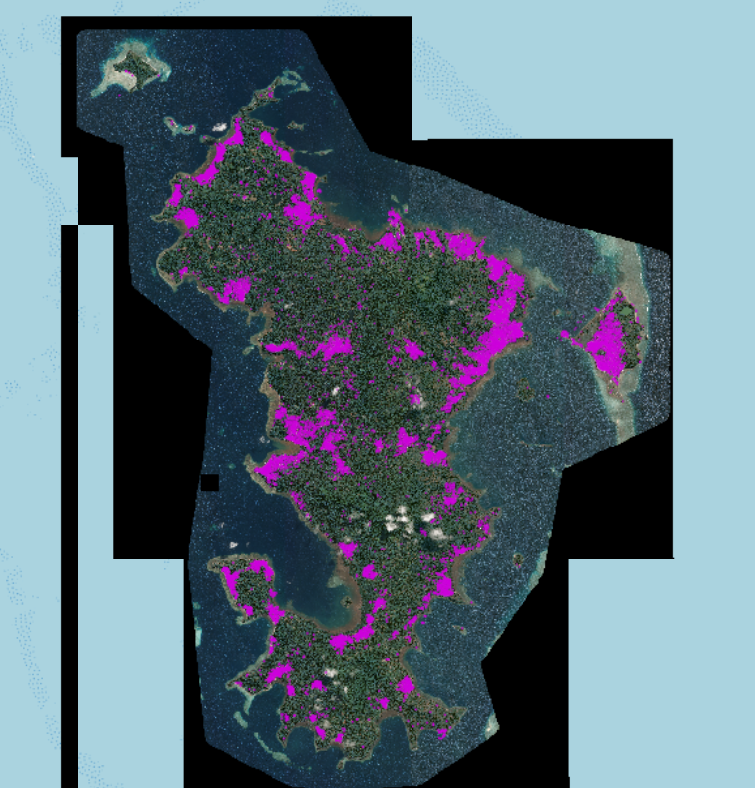Pleiades © CNES_2022, Distribution AIRBUS DS
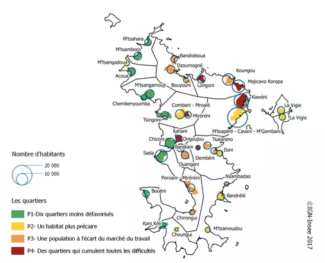
Prédictions originales 2023 de Mayotte et localisation des quartiers de l’île (Insee 2012), Pleiades © CNES_2022, Distribution AIRBUS DS
Étalement urbain
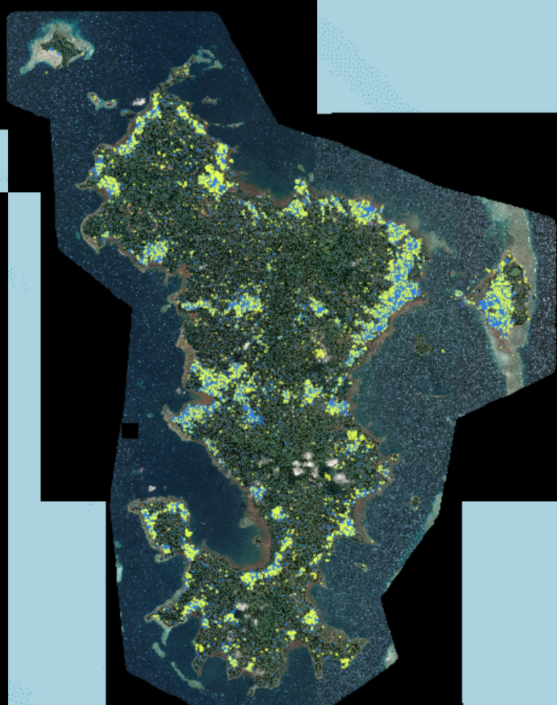Pleiades © CNES_2022, Distribution AIRBUS DS
Construction de logements
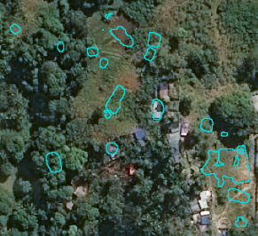
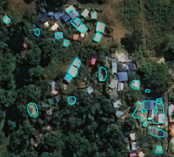
Prédictions 2023 sur fond d’image 2020 et sur fond d’image 2023, Pleiades © CNES_2022, Distribution AIRBUS DS
Prédictions d’un centre-ville
Prédictions originales 2023 d’une zone de Mayotte, Pleiades © CNES_2022, Distribution AIRBUS DS
Imperfections du modèle
- Frontières entre les images
- Délimitations imprécises
- Minuscules polygones
Nettoyage des polygones
- Application d’un buffer positif puis négatif
- Propriétés de lissage (arrondis)
- Clôture des petites brèches dans les bâtiments
- Fusion des polygones qui s’interceptent pour effacer les frontières
Petits polygones ?
Présence de petits polygones (de 1m² à 10m²) : qu’en faire ?
- Logement décent : 9m²
- Mayotte : 30% environ des logements n’ont pas accès à l’eau potable
On ne cherche pas que les logements décents :
- Recherche d’exhaustivité pour soutenir les enquêteurs
- Objectifs d’estimation de population (nombre de bâtiments ou surface ?)
Petits polygones ?
- Observations manuelles : les petits polygones pointent souvent sur des bâtiments qui n’ont pas été repérés entièrement par l’algorithme. Ce n’est donc pas que du bruit.
Conclusion : dans la mesure du possible, on conserve ces polygones.
Résultat du nettoyage
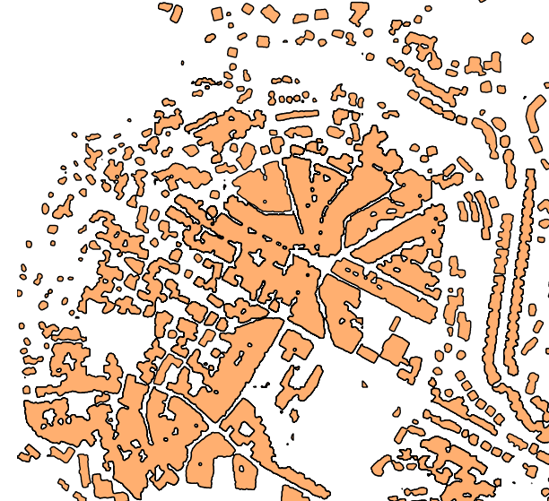Evolution du bâti
Pour estimer l’évolution de la population, on se penche sur l’évolution de la surface construite.
Plusieurs approches considérées :
- Créations et suppressions “pures” : aucune intersection avec un bâtiment existant
- Soustraction du bâti de deux années distinctes
C’est la deuxième approche qui est privilégiée car les créations pures peuvent passer à côté de l’étalement d’un quartier.
Soustraction du bâti
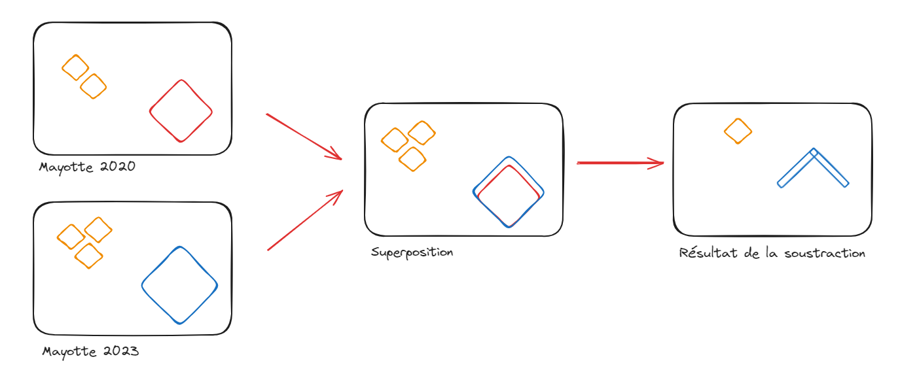Soustraction du bâti
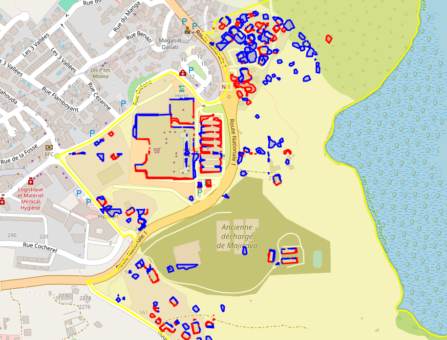Nettoyage de la soustraction
\[ \text{Indice de Compacite} = (4 * \pi * \text{Aire}) / (\text{Perimetre} ^2) \]
Seuiller les polygones selon cet indice permet de supprimer les plus longilignes.
Résultat
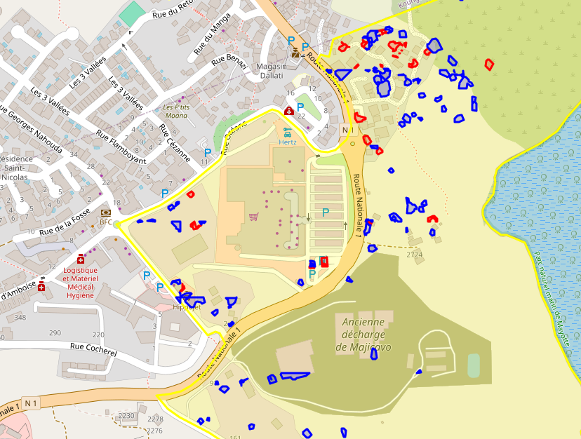On obtient donc la différence de bâti d’une année à l’autre.
Plan de la présentation
1️⃣ Introduction
2️⃣ Méthodologie
3️⃣ Les données
4️⃣ Résultats obtenus
5️⃣ Structure du projet
6️⃣ Discussion
5️⃣ Structure du projet
Outils utilisés
- Projet techniquement complexe pour diverses raisons :
- Données non traditionnelles
- Volumétrie des données
- Besoins ressources computationnelles élevées
- Reproductibilité nécéssaire
- Nécessité d’utiliser des technologies spécifiques, pas forcément dans le toolkit standard du statisticien
- Plateforme SSPCloud centrale pour la réalisation d’un tel projet
- Projet construit en 6 étapes séquentielles
Chaîne de traitement

Etape 1 : Acquisition des images satellitaires
Etape 2 : Nettoyage et annotation des images
Pipeline Python
pour formatter les images brutes :
- Sélection des images pour une zone d’intérêt
- Suppression des images ennuagées
- Découpage des images \(125m \times 125m\)
Pipeline de labellisation des images satellites avec la BDTOPO
Automatisation avec Argo Workflow
Etape 3 : Modélisation et entraînement
Entraînement avec le package Pytorch
Suivi et comparaison des modèles avec MLFlow
Utilisation GPU indispensable (10h d’entraînement sur le SSP Cloud)
Automatisation avec Argo Workflow
Etape 4 : Inférence du modèle
Utilisation de MLFlow pour l’entrepôt de modèle
Déploiement d’une API pour réaliser l’inférence pour :
- une image donnée
- un îlot donné
- un contour géographique donné
Déploiement continu de l’API avec ArgoCD
Réalisation de l’inférence sur l’ensemble des images en parallèle avec Argo Workflow
Etape 5 : Mise à disposition des résultats
Déploiement d’un Geoserver pour mettre à disposition les fichiers géographiques (images et prédictions)
Développement d’une application React pour visualiser les résultats
Etape 6 : Analyses des résultats selon les cas d’usages
- Travail statistique sur les prédictions :
- Détection des zones à forte créations/disparitions
- Production de statistiques par îlot
- Evaluation des résultats
- Dépendant des cas d’usages, quelles priorisations ?
En résumé
- 🛠️ Multitude d’outils à utiliser :
- Kubernetes, Docker, stockage MinIO, API, ArgoCD, Argo Workflow, MLFlow, React…
- … mais dont le coût d’apprentissage est rapidement rentabilisé :
- Technologies “state of the art”
- De plus en plus utilisées à l’Insee (LS3)
- ⚠️ Coût de maintenance élevé ! Compétences rares à l’INSEE (ou ailleurs ?)
Plan de la présentation
1️⃣ Introduction
2️⃣ Méthodologie
3️⃣ Les données
4️⃣ Résultats obtenus
5️⃣ Structure du projet
6️⃣ Discussion
6️⃣ Discussion
Résultats de l’expérimentation
- Résultats prometteurs pour le soutien de l’enquête cartographique
- Première utilisation des algorithmes effectuée par la DMTR pour prioriser l’envoi d’agents sur le terrain
- Opportunité pour le soutien des estimations de population à Mayotte
- Parti pris de présenter une chaîne complète de production en guise de POC !
- Choix rapides ➡️ nombreuses améliorations possibles
Etape 1
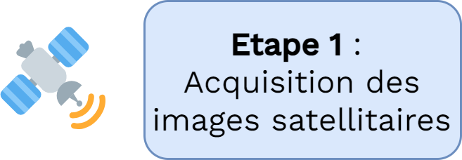
- Les données Pleiades dont nous disposons sont fournies par l’IGN et ne sont datées qu’à l’année
- Travail à fournir pour maîtriser l’acquisition de données PLEIADES
- Indispensable si on veut des estimations précisément datées
Etape 2
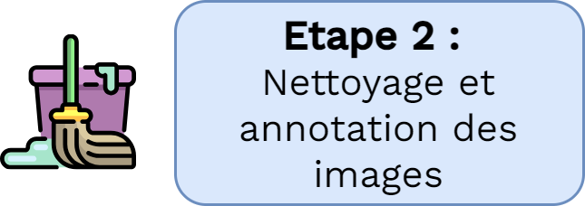
- Le nettoyage (filtering des nuages, normalisation) doit être consolidé et demande validation
- Annotation ou récupération d’autres données annotées, 2 possibilités :
- Améliorer les annotations actuelles manuellement
- Récupérer d’autres images annotées ou annotations pour nos images
Etape 3
- Améliorations secondaires par rapport à l’amélioration de la qualité des annotations
- Suivre l’état de l’art à l’affût de nouveautés (modèle pré-entraînés sur HuggingFace)
Etape 4
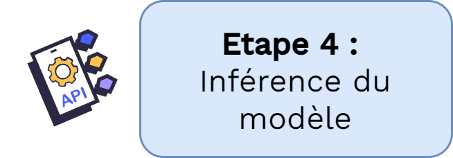
- API à développer au delà du prototype actuel en fonction des besoins des clients
Etape 5
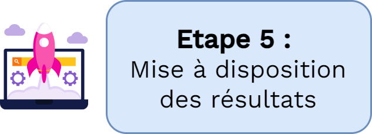
- Application de visualisation à développer au delà du prototype actuel en fonction des besoins des clients
Etape 6 :
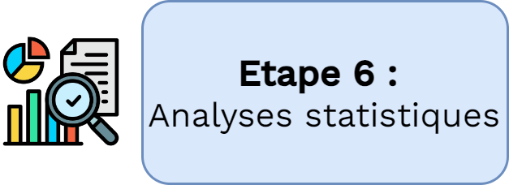
- Analyse des résultats encore insuffisante et à pousser
En plus
- Sentinel 2 : Poursuite des travaux de Judith Nabec sur images Sentinel 2 plus simples d’acquisition, et à résolution spectrale plus élevée (ou sur d’autres images)
La suite
- Fin de la phase d’expérimentation
- Beaucoup de cas d’usage identifiés et de clients finaux
- Nécessité de monter un véritable projet pour chaque cas d’usage avec des moyens adaptés
- Ce qui permettra de hiérarchiser les améliorations